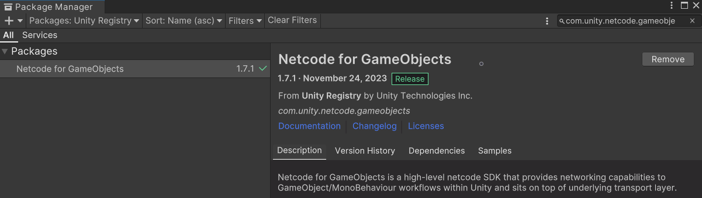
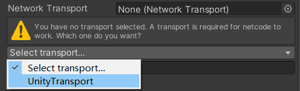
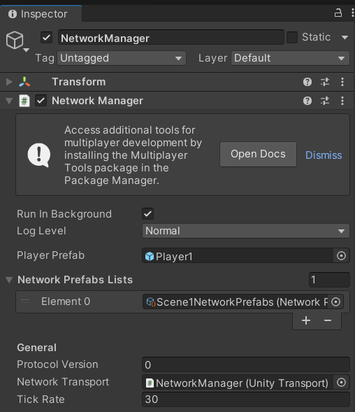
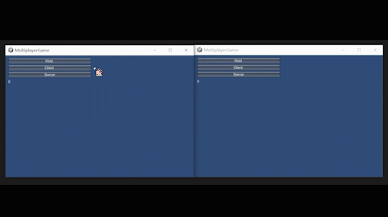

# Unity 多人联机（Netcode）
Netcode for GameObjects (NGO) 是一个专为 Unity 构建的高级网络库，可帮助您抽象网络逻辑。您可以通过网络会话一次性将游戏对象和世界数据发送给许多玩家。借助 NGO，您可以专注于构建游戏，而不是低级协议和网络框架。
本篇只介绍部分基础组件并利用它们实现简单的联机功能，其他高级应用请看官方文档。
# 组件
# 安装 Netcode
安装条件：Unity 版本在 2021.3 或以上、Mono 和 IL2CPP 后端脚本。
安装方法：打开 PackageManager（Window -> PackageManager）搜索 com.unity.netcode.gameobjects 如图所示:
# NetworkManager
NetworkManager 是游戏对象所需的网络代码（Netcode）组件，它具有项目的所有网络代码相关设置。 将其视为支持网络代码的项目的 “中央网络代码中心”。
接下来将介绍部分属性，其他详细解释请看官方文档
- Player Prefab：当分配一个 Prefab 时，该 Prefab 将被实例化为玩家对象并分配给新连接并授权的客户端。
- Network Transport：设置网络特定设置和传输类型的位置。该字段接受任何 INetworkTransport 实现。但是，除非您有独特的传输特定需求，否则建议将 UnityTransport 与 Netcode 用于游戏对象的传输结合使用。
- Network Prefabs Lists：您在其中注册网络预制件。您还可以在此处为每个已注册的网络预制件创建单个网络预制件覆盖。
- Starting a Server, Host, or Client：为了执行涉及发送消息的任何与网络代码相关的操作，您必须首先启动服务器并侦听与至少一个已连接客户端的连接（服务器在作为主机运行时可以向其自身发送 RPC）。要实现此目的，您必须首先将 NetworkManager 作为服务器、主机或客户端启动。您可以调用三种 NetworkManager 方法来完成此操作：
NetworkManager.Singleton.StartHost(); // 将 NetworkManager 作为服务器和客户端启动（即具有本地客户端）
NetworkManager.Singleton.StartServer(); // 将 NetworkManager 仅作为服务器启动（即，没有本地客户端）。
NetworkManager.Singleton.StartClient(); // 将 NetworkManager 仅作为客户端启动。
# UnityTransport
用于设置网络特定设置和传输类型，例如：IP 地址、端口、服务器监听地址等网络设置。
在 NetworkManager 的 Network Transport 选项中选择 UnityTransport 时，会自动添加这个组件。如图所示：
# NetworkObject 和 NetworkBehaviour
GameObjects 高级组件的 Netcode、RPC 系统、对象生成、NetworkVariables 都至少依赖于这两个组件 NetworkObject、NetworkBehaviour
要复制任何 Netcode 感知属性或发送 / 接收 RPC，GameObject 必须具有 NetworkObject 组件和至少一个 NetworkBehaviour 组件。任何与 Netcode 相关的组件（例如具有一个或多个 NetworkVariables 或 RPC 的 NetworkTransform 或 NetworkBehaviour）都需要同一相对 GameObject（或相关 GameObject 的父级）上的 NetworkObject 组件。
生成 NetworkObject 时，NetworkObject.GlobalObjectIdHash 值最初标识关联的网络预制件资产客户端实例化以创建客户端本地克隆。在本地实例化后，每个 NetworkObject 都会分配一个 NetworkObjectId，用于跨网络关联 NetworkObject。例如：一个对等方可以说 “将此 RPC 发送到 NetworkObjectId 103 的对象”，每个人都知道它指的是哪个对象。NetworkObject 在实例化并分配唯一的 NetworkObjectId 时在客户端上生成。
NetworkBehaviours 使用户能够将自己的自定义网络代码逻辑添加到关联的 NetworkObject。在为网络预制件（例如游戏玩家）编写脚本时应继承 NetworkBehaviour 而不是 MonoBehaviour
网络对象的组件加载顺序很重要。确保优先加载 NetworkObject，随后加载其他 NetworkBehaviour 组件。
其他详细介绍请看官方文档。
# NetworkTransform
对象变换的同步是当今多人游戏中执行的最常见的网络代码任务之一。这件事看似简单但是实际上它很复杂。幸运的是，NGO 为您提供了 NetworkTransform 组件实现，它可以处理转换同步的一些问题，并且可以轻松配置。其他详细介绍请看官方文档
# 示例（2D 场景）
# 添加必要的组件
- 玩家预制件：新建一个正方形，命名为 Player1，添加 Rigidbody 2D 组件（将重力设置为 0），添加 PlayerInput 组件（本例中的移动控制使用 Input System），添加 NetworkObject 组件，制作成预制件，将它在场景中删除
- NetworkManager：新建一个空物体，名为 NetworkManager，添加 NetworkManager 组件，将 Player Prefab 属性设置为刚才创建的预制件，将 Network Transport 属性设置为 UnityTransport，其他属性均为默认值（包括 UnityTransport 组件），如图所示：
# 编写玩家脚本
- 新建脚本 ClientNetworkTransform 和 Player1_1，将他们添加到玩家预制件中
- NetworkVariable 是用于网络同步信息的类，在本例中不同的方块使用不同的颜色，所以需要同步颜色信息，位置信息由 NetworkTransform 组件完成同步
- NetworkVariable 默认只有 服务端能写，如果需要客户端写入，初始化时要明确指定读写权限
- NetworkVariable 需要在创建时初始化，或者在 Awake () 中初始化
ClientNetworkTransform
using Unity.Netcode.Components; | |
namespace Default | |
{ | |
/// <summary> | |
/// ClientNetworkTransform | |
/// </summary> | |
public class ClientNetworkTransform : NetworkTransform | |
{ | |
/// <summary> | |
/// 用于确定谁可以写入此转换。仅限客户端。 | |
/// </summary> | |
/// <returns></returns> | |
protected override bool OnIsServerAuthoritative() | |
{ | |
return false; | |
} | |
} | |
} |
Player1_1
using System.Collections; | |
using Unity.Netcode; | |
using UnityEngine; | |
using UnityEngine.InputSystem; | |
namespace Default | |
{ | |
/// <summary> | |
/// Player1_1 | |
/// </summary> | |
public class Player1_1 : NetworkBehaviour | |
{ | |
[Tooltip("移动速度")] | |
public float speed = 10; | |
private PlayerInput playerInput; | |
private InputAction moveAction; | |
private NetworkVariable<Color> networkColor = new NetworkVariable<Color>(); | |
private void Awake() | |
{ | |
playerInput = this.GetComponent<PlayerInput>(); | |
} | |
private void Start() | |
{ | |
if (!IsServer || IsHost) | |
{ | |
moveAction = playerInput.actions.FindActionMap("Player Controls").FindAction("Move"); | |
} | |
StartCoroutine(GetColor()); | |
} | |
private void Update() | |
{ | |
Move(); | |
} | |
/// <summary> | |
/// 获取颜色 | |
/// </summary> | |
public IEnumerator GetColor() | |
{ | |
if (IsServer) | |
{ | |
Color color; | |
do | |
{ | |
color = new Color(Random.value, Random.value, Random.value); | |
} | |
while (color.r + color.g + color.b < 1); | |
this.GetComponent<SpriteRenderer>().color = color; | |
networkColor.Value = color; | |
} | |
yield return new WaitForSeconds(0.05f); | |
if (IsOwner || IsClient) | |
{ | |
this.GetComponent<SpriteRenderer>().color = networkColor.Value; | |
} | |
} | |
/// <summary> | |
/// 移动 | |
/// </summary> | |
public void Move() | |
{ | |
if (IsOwner) | |
{ | |
Vector2 moveVector = moveAction.ReadValue<Vector2>(); | |
Vector3 movePosition = Vector3.Lerp( | |
this.transform.position, | |
this.transform.position + (Vector3)moveVector, | |
Time.deltaTime * speed); | |
this.transform.position = movePosition; | |
} | |
} | |
private void OnEnable() | |
{ | |
playerInput.actions.Enable(); | |
} | |
private void OnDisable() | |
{ | |
playerInput.actions.Disable(); | |
} | |
} | |
} |
# 简单的 UI 界面
- 新建一个空物体，命名为 PlayerManager，新建脚本 PlayerManager1 并添加到 PlayerManager 物体中
using System.Net; | |
using System.Net.Sockets; | |
using Unity.Netcode; | |
using Unity.Netcode.Transports.UTP; | |
using UnityEngine; | |
namespace Default | |
{ | |
/// <summary> | |
/// PlayerManager1 | |
/// </summary> | |
public class PlayerManager1 : MonoBehaviour | |
{ | |
private int count = 0; | |
private void Start() | |
{ | |
// 设置 IP 地址、端口、服务器监听地址 | |
NetworkManager.Singleton.GetComponent<UnityTransport>().SetConnectionData( | |
GetLocalIPAddress(), | |
7777, | |
"0.0.0.0"); | |
} | |
private void OnGUI() | |
{ | |
GUILayout.BeginArea(new Rect(10, 10, 300, 300)); | |
if (!NetworkManager.Singleton.IsClient && !NetworkManager.Singleton.IsServer) | |
{ | |
StartButtons(); | |
} | |
else | |
{ | |
StatusLabels(); | |
SubmitNewPosition(); | |
} | |
GUILayout.Label(count.ToString()); | |
GUILayout.EndArea(); | |
} | |
private string GetLocalIPAddress() | |
{ | |
string ipAddress = ""; | |
IPHostEntry host = Dns.GetHostEntry(Dns.GetHostName()); | |
foreach (IPAddress ip in host.AddressList) | |
{ | |
if (ip.AddressFamily == AddressFamily.InterNetwork) | |
{ | |
ipAddress = ip.ToString(); | |
break; | |
} | |
} | |
return ipAddress; | |
} | |
private static void StartButtons() | |
{ | |
// 选择主机、服务器、客户端 | |
if (GUILayout.Button("Host")) NetworkManager.Singleton.StartHost(); | |
if (GUILayout.Button("Client")) NetworkManager.Singleton.StartClient(); | |
if (GUILayout.Button("Server")) NetworkManager.Singleton.StartServer(); | |
} | |
private static void StatusLabels() | |
{ | |
var mode = NetworkManager.Singleton.IsHost ? | |
"Host" : NetworkManager.Singleton.IsServer ? "Server" : "Client"; | |
GUILayout.Label("Transport: " + | |
NetworkManager.Singleton.NetworkConfig.NetworkTransport.GetType().Name); | |
GUILayout.Label("Mode: " + mode); | |
} | |
private void SubmitNewPosition() | |
{ | |
// 用于显示玩家数量 | |
if (GUILayout.Button(NetworkManager.Singleton.IsServer ? "Log" : "Request Log")) | |
{ | |
if (NetworkManager.Singleton.IsServer && !NetworkManager.Singleton.IsClient) | |
{ | |
count = 0; | |
foreach (ulong uid in NetworkManager.Singleton.ConnectedClientsIds) | |
{ | |
Player1 playerObjects = NetworkManager.Singleton.SpawnManager.GetPlayerNetworkObject(uid).GetComponent<Player1>(); | |
count++; | |
Debug.Log(playerObjects); | |
} | |
} | |
else | |
{ | |
var playerObject = NetworkManager.Singleton.SpawnManager.GetLocalPlayerObject(); | |
count = 1; | |
Debug.Log("playerObject=" + playerObject); | |
} | |
} | |
} | |
} | |
} |
# 注意
本篇以局域网为例，如果用的是服务器，需要注意以下几点
- IP 必须是公网 IP
- 监听地址必须是
0.0.0.0 - 许多云主机默认只开 TCP，而 UnityTransport 默认用 UDP
- 执行以下代码打开 UDP
sudo ufw allow 7777/udp打开 7777 端口的 UDP 连接sudo ufw reload重载sudo ufw status检查状态
- 执行以下代码打开 UDP
- 云主机安全组需要放行对应端口的 UDP，出入都要放行
# 演示
